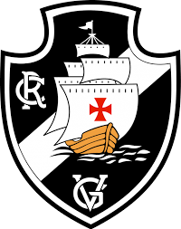
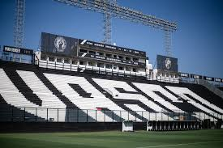

🟢 14 de abril de 2026
Vasco da Gama 🆚 Audax Italiano
🏆 CONMEBOL Sul-Americana
🟢 18 de abril de 2026
Vasco da Gama 🆚 São Paulo
🏆 Campeonato Brasileiro
🟢 21/22 de abril de 2026
Paysandu 🆚 Vasco da Gama
🏆 Copa do Brasil
🟢 25/26 de abril de 2026
Corinthians 🆚 Vasco da Gama
🏆 Campeonato Brasileiro
🟢 30 de abril de 2026
Vasco da Gama 🆚 Club Olimpia
🏆 CONMEBOL Sul-Americana
🛡️ Defesa
Alan Saldivia (zagueiro – ex-Colo-Colo)
Cuiabano (lateral-esquerdo – ex-Nottingham Forest)
🎯 Meio-campo
Johan Rojas (meia – ex-Monterrey)
⚡ Ataque
Brenner (atacante – ex-Cincinnati)
Marino Hinestroza (ponta – ex-Atlético Nacional)
Claudio Spinelli (centroavante – ex-Independiente del Valle)
⚽ Provável escalação contra o Audax Italiano
O Vasco joga dia 14/04 pela Sul-Americana
O técnico deve usar time misto ou reserva
Possível time:
Léo Jardim, Puma Rodríguez, Saldivia, Robert Renan, Lucas Piton
Hugo Moura, JP, Rojas
Nuno Moreira, Spinelli e Adson
👉 Estratégia: poupar titulares porque o foco maior é o Brasileirão.
🔄 Time reserva deve ser mantido
A tendência é repetir a base do time alternativo
Léo Jardim pode voltar ao gol como titular
📉 Jogador perdeu espaço no time
O meia Nuno Moreira caiu de rendimento
Já começou a ficar no banco nos últimos jogos
Perdeu espaço com o técnico Renato Gaúcho
⚽ Último jogo do Vasco
Vasco empatou com o Remo por 1x1 no Brasileirão
Time está no meio da tabela (13 pontos)
❤️ Homenagem ao ídolo
O clube fez novas homenagens ao ídolo Roberto Dinamite
Relembrando a história e importância dele pro Vasco
🏆 Situação na Sul-Americana
Vasco está na fase de grupos
Ainda busca a primeira vitória na competição
🌎 Internacionais
🥇 Copa Libertadores da América: 1998
🥇 Campeonato Sul-Americano de Campeões: 1948 (considerado precursor da Libertadores)
🇧🇷 Nacionais
🥇 Campeonato Brasileiro Série A:
1974, 1989, 1997, 2000
🥇 Copa do Brasil:
2011
🥇 Campeonato Brasileiro Série B:
2009
🏆 Interestaduais / Regionais
🥇 Torneio Rio-São Paulo:
1958, 1966, 1999
🏙️ Estaduais (Rio de Janeiro)
🥇 Campeonato Carioca:
24 títulos
(1923, 1924, 1929, 1934, 1936, 1945, 1947, 1949, 1950, 1952, 1956, 1958, 1970, 1977, 1982, 1987, 1988, 1992, 1993, 1994, 1998, 2003, 2015, 2016)
⭐ Outros títulos importantes
🏆 Torneio Octogonal Rivadavia Corrêa Meyer: 1953
🏆 Torneio Teresa Herrera: 1957
🏆 Torneios internacionais amistosos (vários)
Galeria de títulos do vasco:
SÃO JANUÁRIO: SÍMBOLO DE LUTA
